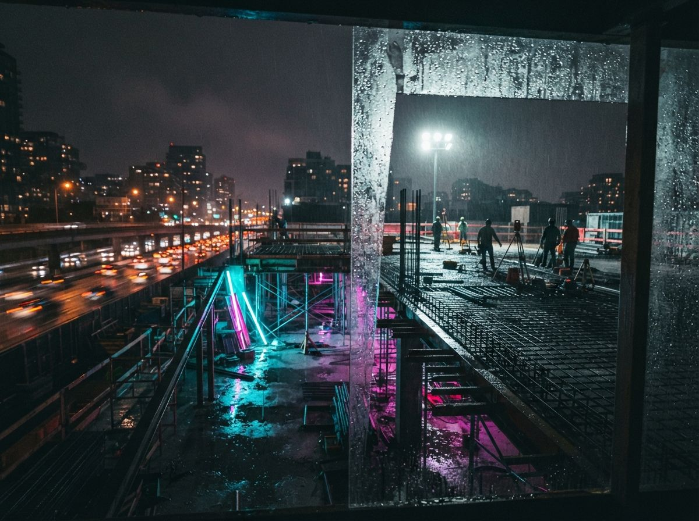

A visualization guide in today's sweep listed Pelicad in a single line next to Veras, LookX and D5, promised there were other relevant tools, and then reviewed five of them without it. That is the fate of half the market: a name in a table with no detail, ranked by nobody, tried by no one writing the list. So we went and read the vendor's own material, because the one-word listing does the tool a disservice. Pelicad is not another sketch-to-photoreal box. It takes 3D data as input, and its whole reason to exist is the thing most renderers fake.
What it actually is
Pelicad is a cloud renderer whose input is a model, not a picture. You bring a CAD, BIM or feasibility model and the AI works on top of it, handling style, light and atmosphere while the geometry and materials come from what you built. That is the reverse of the generative wing, which asks for a flat export or a hand sketch and then reconstructs a plausible building around your lines. When the input is a 2D image, the tool is guessing at the third dimension every time. When the input is the model, it is not guessing about your building at all, only about how to light it.
The file support reflects that. Pelicad accepts the formats a working practice already has, and it can stay connected to your planning model rather than swallowing a one-time export.
| Input | What it is for |
|---|---|
| IFC | Open BIM exchange from most platforms |
| RVT | Native Revit models |
| SKP | SketchUp massing and design models |
| 3DM | Rhino geometry |
| DWG | CAD drawings and 2D base data |
| Speckle plugin | Live link, so the render updates when the planning model changes |
That Speckle connection is the quiet part worth noticing. Most generative tools charge you a roundtrip tax every time the design moves: export, upload, generate, download, reimport, and do it all again after the next markup. A live link means the context image tracks the model instead of going stale the moment a wall moves. We have argued before that where a tool sits in your workflow matters more than its model quality for anything you touch daily, and a plugin that follows the model is on the right side of that line.

The site is the feature
Here is the part to stop on. Most AI renderers hand you a building against a backdrop the model invented. A pleasant sky, some generic street trees, a road that does not exist anywhere. For a mood image that sells a feeling, invented context is fine and nobody is fooled about its purpose. For feasibility, massing and planning work, invented context is worse than a blank background, because it looks authoritative while being fiction. The neighbour's roofline, the setback, the sightline from the approach road: those are exactly what a feasibility image is supposed to answer, and a generated backdrop answers them with total confidence and no basis whatsoever.
Pelicad's pitch is that the context comes from the site, not the model's imagination. Place the massing, get the real surroundings around it, and the image is now arguing about the actual proposal instead of a flattering stand-in. That is a genuinely different job from sketch-to-photoreal, and it is the job that early-stage and developer-facing work actually needs.
The origin explains the shape. Pelicad is the pivot of Cityscaper, a startup that began in urban visualization, dropping proposed buildings into their surroundings so residents and planners could judge them in place. That heritage is stamped on the product. The headline move is putting your model into a site model automatically and then polishing the materials and environment, which is the urban-planning instinct wearing an archviz jacket. It sits across a seam we usually keep separate: the site analysis tools and the feasibility tools live in a different category from renderers, and Pelicad is a renderer whose value leans toward context.
A building floating in an invented street is a picture. A building standing in its real one is an argument.
Who it is for
Not the studio chasing a competition-winning hero shot at maximum drama. Pelicad is pointed at feasibility studies, massing options and stakeholder alignment, the phase where you need a believable image fast and the believability has to include the neighbourhood. It runs in the cloud with the setup automated, so a team without a rendering specialist or a workstation GPU can still produce context-aware visuals. That is the same small-practice value proposition we keep flagging as the real reason these tools sell, and the same one that carries the same cloud dependency cost we keep flagging alongside it.
What we did not verify
A first look has to say where it stops. We have not run Pelicad on a live project, so we are not vouching for output quality, and photoreal atmosphere built on a 3D substrate is precisely where these tools vary most. We did not confirm current pricing either. It is a cloud subscription, and the number to trust is the one on the vendor's own page on the day you buy, not a figure some directory captured months ago and never revisited.
And the site-context claim itself is the thing to test before anything else. Bring a project whose surroundings you know cold, render it, and check whether the context is your context or a convincing approximation of it. If it is real, you have found something the sketch tools cannot do by design. If it is approximate, you have found another good-looking backdrop, and you price it as one. That test costs one render and settles the whole question.
The cloud part carries its usual bill. Your model and its site leave the building on every render, so read the retention and training terms before the first confidential scheme goes up, and keep a local path for the render that has to happen when someone else's server is down at 11pm.
Our take
Pelicad is not trying to win the photoreal arms race that the ranking blogs keep scoring, and that is the reason to trial it. It answers a different question. Not how beautiful can this building look, but how honestly can we show it where it will actually stand. Most of the market competes on the first question, which converges every few months regardless of who wins this month. The second question is a permanent part of feasibility and planning work, and a renderer that treats the real site as the input rather than the decoration is aimed at a need the comparison tables do not even have a column for.
Trial it on a site you could draw from memory. The render that matches what you already know is worth more than the one that merely looks expensive. A picture flatters the building. Only the real street will survive the planning meeting.
Written from the 8 August 2026 intel sweep. Product capabilities and file support drawn from Pelicad's own site and public startup coverage on 8 August 2026; not tested hands-on. Pricing and output quality were not independently verified and should be confirmed against the vendor before purchase.